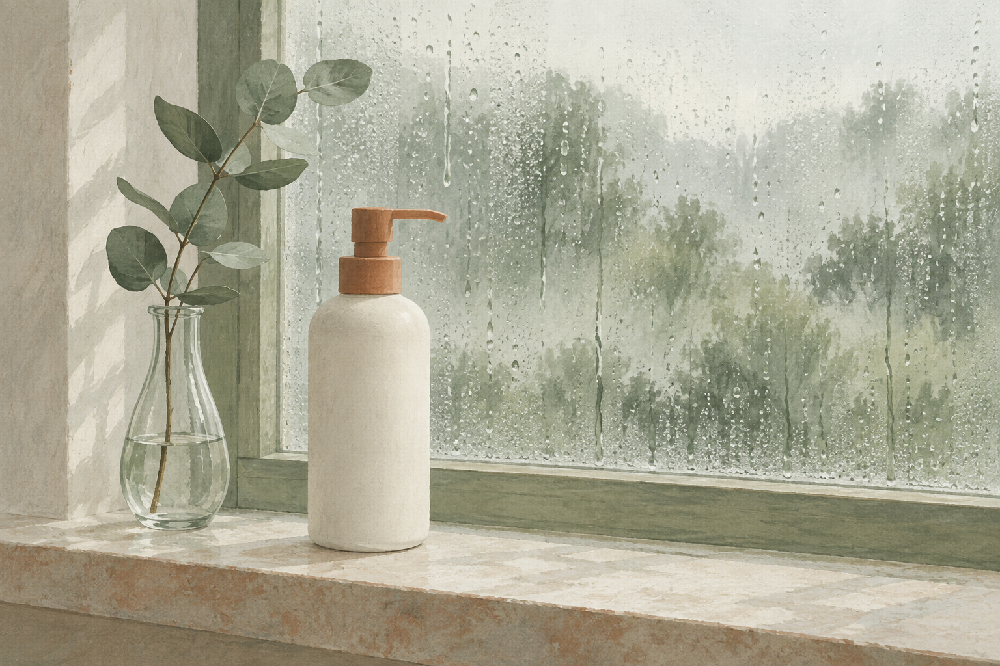
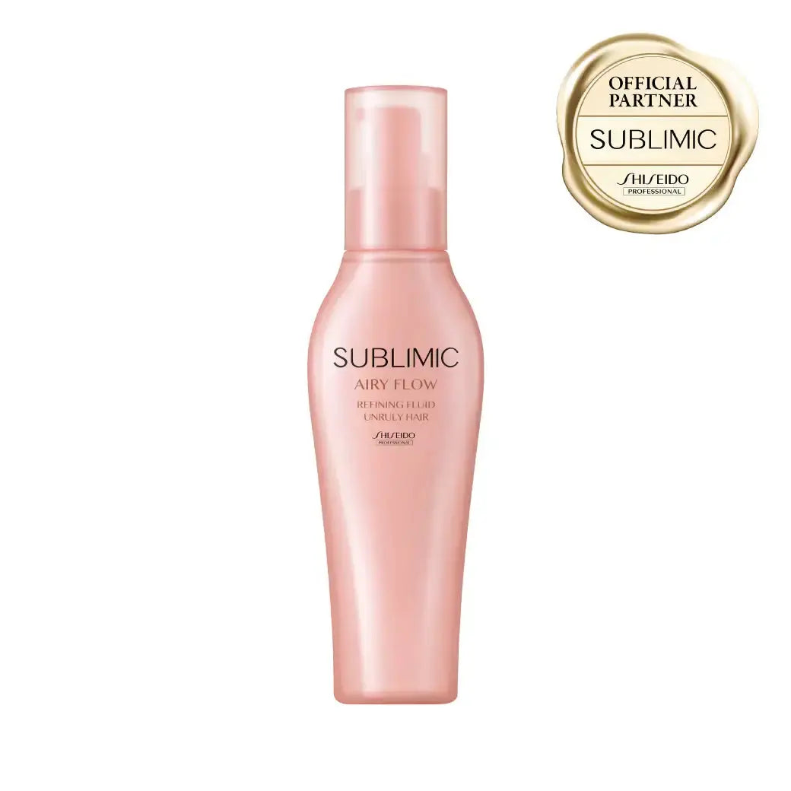

EMPATHY
こんな「まとまらない＝傷んでいる、だと思っていた」、心当たりありませんか。
- 朝はそれなりに決まっていたのに、昼には広がっている
- 雨の日と晴れの日で、同じ髪とは思えないくらい違う
- 補修系のケアを足しても、うねりだけは変わらない
- 毎朝ストレートアイロンで伸ばすのが前提になっている
- 湿気の日は結ぶしかない、と半ばあきらめている
- 「まとまらないのは傷んでいるからだ」と思ってきた
- ヘアケア＝傷みを直すこと、だと無意識に思っている
一つでも頷いたなら、あと3分だけ読み進めてほしいんです。
私はこのシリーズで、12回かけてアイテムを揃えてきました。合計¥62,530。前回はナイトキャップまで見直して、寝ている間の摩擦にも手が届きました。
そのあと、12本を「何を直そうとしていたか」で並べ直してみたんです。
傷みを直す・足す(シャンプー、トリートメント、ヘアマスク、プレトリートメント、洗い流さないトリートメント、バーム、香水オイル)。頭皮(スカルプエッセンス、スカルプブラシ)。傷ませない(ドライヤー、タオル、ナイトキャップ)。
足すか、守るか、負担を減らすか。やり方は変わっても、向いている先はずっと同じでした。12本とも「傷み」まわりの話だったんです。

IF NOTHING CHANGES
正直に言うと、いちばん引っかかったのは「うねること」じゃありません。
12回とも、別の問題を直そうとしていたことのほうです。
書き出してみて、抜けているものに気づきました。うねる。広がる。湿気の日にまとまらない。
私はこれをずっと、傷みのせいだと思っていました。だから補修を足していた。でも冷静に考えると、傷んでいない髪でもうねります。そして補修を足しても、髪の形そのものが変わるわけではありません。
ここが厄介なところで、補修を足すと手触りは実際に良くなるんです。だから「効いている」と感じる。なのに翌朝、湿気のある日にはやっぱり広がる。それで「まだ傷んでいるんだ」と解釈して、また次の補修を探す。──この往復を、私は何年も続けていました。
しかも湿気は、自分ではどうにもできません。前回は「寝ている間は意志が届かない」という話を書きましたが、今回は自分の外側にある条件です。雨の日を減らすことはできない。
半年後も、たぶん同じです。棚には14本目、15本目の新しい補修が増えていて、それでも雨の日の朝は鏡の前で同じことを思っている。
いちばんもったいないのは、ここです。第1〜12弾で、"傷み"側の答えはもう出そろっているんです。出ていないのは、傷みではない問題のほうだけ。
──ただ、先に言っておきます。これを塗ってもくせ毛が直るわけではありません。ストレートアイロンの代わりにもなりません。その線引きは後半で正直に書きます。
THE TURN
そこでたどり着いたのが、「サブリミック エアリーフロー リファイニングフリュイド」でした。
ここで一つ、はっきりさせておきたいことがあります。第1〜12弾で紹介してきたものは、12本とも「傷み」まわりのアイテムでした。
これは欠点ではありません。傷みは実際にいちばん大きな問題だからです。12本とも、その役割を果たしてくれました。
一方で今回のものは、向いている先が違います。メーカーの説明によれば、くせやうねりのある髪の形と、内部の水分バランスに向けた設計。傷みを直すためのものではありません。
言ってしまえば、第1〜12弾が"傷みをどうにかする"。そしてこの1本が"傷みではないほうをどうにかする"。傷みは12回で揃いました。13回目は、別の問題のほうです。
私がこの1本を選んだ理由は、大きく3つ。
シリーズで唯一、「傷み」以外に向いている
12本は足すか守るか減らすかの違いで、向いている先は同じでした。うねりは傷みとは別の問題なので、どれだけいい補修を足しても届きません。13回目にして初めて、向き先が変わります。
第1弾とまったく同じタイミングで塗る、別の目的
タオルドライのあとに塗って、乾かす。第1弾のオラプレックス No.6と工程は完全に同じです。同じ棚の、同じ手順の、別の目的。「工程が埋まった＝もう足すものがない」ではなかった、という話でもあります。
第10弾で「減らしたい」と書いた熱を、逆から見る
ドライヤーの回で、私は熱を減らしたい負担として書きました。この製品はメーカー説明上、その同じ熱を味方にする設計です。同じものでも、見る角度で役割が変わる。そこが面白いと思いました。
「傷みをどうにかする」から、「傷みではないほうをどうにかする」へ。12回かけて傷み側を埋めてきたからこそ、埋まらなかったものの正体に目が向きました。
※技術・成分・仕上がりに関する記載はメーカーの公表内容に基づくものであり、効果を保証するものではありません。くせ・うねりの出方や感じ方には個人差があります。
THE PRODUCT
サブリミック エアリーフロー リファイニングフリュイドとは
資生堂プロフェッショナルの「サブリミック」というラインの中の、くせやうねりで扱いにくい髪に向けたシリーズが「エアリーフロー」です。その中の洗い流さないトリートメント(ヘア用乳液)が、このリファイニングフリュイドになります。
正直に書いておくと、資生堂プロフェッショナルはシリーズ2回目です。第6弾のアデノバイタル アドバンスト スカルプエッセンスが同じメーカーでした。ただしあちらは頭皮のライン、こちらはくせ・うねりのライン。中身としては別物です。

- タイプ
- 洗い流さないトリートメント(ヘア用乳液)・ポンプ式
- 価格
- ¥3,410(税込)/ 125g。12本の平均¥5,211より下、第1弾(¥3,740)に近い位置
- 向いている相手
- くせやうねりなどで髪の扱いにくさに悩む人、とメーカーは説明しています
- 髪質タイプ
- UNRULY HAIR(ボリュームが普通〜出にくい髪用)。ボトルにもそう印字されています
- 技術
- 独自の「サーマルフローモーションシステム」。毎日使うアイロンやドライヤーの熱を味方にするケアステップ、とされています
- 湿気について
- 毛髪内の水分バランスを保ち、湿気によるくせ戻りを防ぐ、とされています
- 成分(公表)
- 毛髪保湿成分:ソルビトール / 毛髪保護成分:マカデミアナッツ脂肪酸フィトステリル
- 使い方
- タオルドライ後、1〜2プッシュ(ミディアムレングスの目安)を手に取り、毛先を中心に全体へ。乾いた髪にも使えます
- 香り
- 花々と果実の甘くフレッシュな香りに、アールグレイのアクセント(メーカー表記)
- ブランド
- 資生堂プロフェッショナル・サブリミック(メーカーとしては第6弾に続く2回目、ラインは別)
この1本のいちばんの特徴は、今のケアを1つも置き換えないという点です。シャンプーもトリートメントもドライヤーもタオルもナイトキャップも、今のまま。第1〜12弾で作った流れには何も手を加えません。タオルドライのあとに1〜2プッシュ増えるだけです。
そして、ここは書いておかないとフェアじゃないと思うので先に書きます。
商品ページのテクノロジー説明には、熱で髪の形を整える成分としてグリオキシル酸・グリコール酸の名前が出てきます。ただしそこには※がついていて、「マスクに配合」と書かれている。PEG-150という保護成分も「マスク・トリートメントに配合」です。
つまりシリーズ全体の説明と、このフリュイド1本にできることは同じではありません。ラインの説明をそのまま1本の説明として読むと、期待がずれます。メーカーがきちんと※で書き分けているのに、紹介する側がまとめて書いてしまったら意味がないので、そのまま書いておきます。
※上記の技術・成分・仕上がりに関する記載はすべてメーカーの公表内容に基づくものです。効果を保証するものではなく、感じ方には個人差があります。
WHY IT WORKS
「で、結局これを1〜2プッシュ足すと何が変わるの?」に、飾らず正直に答えます。
12回かけて「傷みをどうにかする」を揃えてきたからこそ、13回目でようやく「それでは届かないもの」に目が向きました。これは、12本ぶん遠回りしたからこそ出てきた、私のいちばん正直な実感です。
※上記は技術・使い方に関する説明です。効果には個人差があり、特定の結果を保証するものではありません。
WHY TRUST IT
正直に言うと、私は「まとまる」と書いてあるだけでは商品を信じないタイプです。
それでもこの1本を紹介したいと思えたのは、こんな背景があるからです。
効果ではなく、問題の切り分けで選べる
「どのくらいまとまるか」は、私には数字で確かめようがありません。だから主な判断材料にしていません。私が納得したのは「うねりは傷みとは別の問題だ」という、確かめようのある切り分けのほうです。
メーカーが、成分の配合先を※で書き分けている
形を整える成分は「マスクに配合」と明記されています。ラインの説明を全製品に被せて書くこともできたはずなのに、そうしていない。ここを読んで、この商品ページは信用できると思いました。
髪質タイプを2つに分けている＝万人向けと言っていない
ボリュームが出やすい髪には別タイプが用意されています。「誰にでも合います」と書かれた商品より、想定する相手をはっきり決めている商品のほうが、私は安心します。
第1弾・第10弾と矛盾しない。むしろ続きになる
塗るタイミングは第1弾とまったく同じ。熱の扱いは第10弾の裏返し。前回までに何を買った人にも、何も買っていない人にも、そのまま当てはまります。
¥3,410はシリーズの平均より下
第1弾¥3,740、第2弾¥4,180、第3弾¥4,290、第4弾¥7,260、第5弾¥8,800、第6弾¥5,776、第7弾¥2,200、第8弾¥3,740、第9弾¥2,950、第10弾¥9,350、第11弾¥894、第12弾¥9,350。合計¥62,530、平均¥5,211。今回はそれより下です。
サロン専売品を、公式通販でそのまま買える
ALBUM ONLINE STOREは正規販売店です。私は毎回ここを確認してから紹介しています。
WHAT PEOPLE NOTICE
こんな使用感(声の傾向)
うねりは髪質で出方がまったく違います。だからこそ、盛らずに、分かったことだけを整理してみます。
湿気のある日について
いちばん違いが出るのはここでした。晴れた日は正直よく分かりません。差が分かるのは雨の日や、湿度が高い日の午後です。逆に言えば、晴れた日に使って「変わらない」と判断するのは早いと思います。
乾かしたあとの手触りについて
重くはなりません。オイルを足したときのような、しっとり寄せる感じとは違います。ふんわり側に着地する印象でした。ただ私はボリュームが出にくいほうなので、このタイプが合っていただけかもしれません。
量について
ミディアムで1〜2プッシュが目安と書かれています。私は最初に多く出しすぎて、乾かしたあとに少し重く感じました。少なめから始めて、足りなければ足すほうがいいと思います。
香りについて
花と果実にアールグレイのアクセント、とメーカーは説明しています。個人的には強すぎませんでしたが、香りは好みが分かれるところなので、そこは正直に「合う合わないがある」と書いておきます。
タイプ違いについて
このフリュイドはUNRULY HAIR(ボリュームが普通〜出にくい髪用)です。髪の量が多くて広がりやすい方は、想定された相手ではありません。同じラインの「THICK, UNRULY HAIR」を選ぶほうが筋が通ります。
期待しすぎないほうがいい部分
ここは正直に書きます。これを塗ってもくせ毛が直るわけではありません。ストレートアイロンの代わりにもなりません。形が変わるのではなく、扱いやすさの側を助けるもの、という理解がいちばん近いと思っています。
もちろん、くせの出方も湿度の感じ方も人それぞれ。だからこそ、「自分のうねりは、傷みの問題なのか別の問題なのか」で考えてみる価値があると思っています。
※上記は一般的な使用感の傾向および個人の感想であり、効果を保証するものではありません。
FAQ
よくある質問
今の傷みケアと併用できますか?
第1弾のオラプレックス No.6とどちらを使えばいいですか?
ボリュームが出やすい髪でも使えますか?
乾いた髪にも使えますか?
ストレートアイロンの代わりになりますか?
湿気の日でも絶対にまとまりますか?
形を整える成分が入っているんですよね?
使うと髪の傷みが治るということですか?
ABOUT THE PRICE
価格の考え方
サブリミック エアリーフロー リファイニングフリュイドは ¥3,410(税込)、125gです。
これまでの12本を並べてみます。¥3,740 / ¥4,180 / ¥4,290 / ¥7,260 / ¥8,800 / ¥5,776 / ¥2,200 / ¥3,740 / ¥2,950 / ¥9,350 / ¥894 / ¥9,350。合計¥62,530、1本あたりの平均は¥5,211。今回はその平均より下です。
前回が¥9,350、その前が¥894。ずいぶん振れましたが、今回は真ん中あたりに戻りました。第1弾のオラプレックス No.6(¥3,740)に近い位置というのも、同じタイミングで塗るものとしては分かりやすいと思います。
そしてもう一度、比率の話をさせてください。私はこのシリーズで、12本・合計¥62,530を「傷み」に使ってきました。同じ期間、「傷みではないほう」に使った金額は¥0です。──毎回この計算をして毎回笑っているのですが、私はどうやら、毎回どこか1箇所を完全に空白にしたまま買い物をしているらしいんです。
買う前に2つだけ確認してください。自分のうねりが「傷みの問題」なのか「形の問題」なのか。そして、自分がUNRULY HAIR(ボリュームが普通〜出にくい髪)のほうなのか。この2つが合っていないと、金額の大小に関係なく届きません。
※価格・在庫は変動します。最新情報は必ず商品ページでご確認ください。仕上がりや感じ方には髪質による個人差があります。
BEFORE YOU GO
安心して試すために
「結局また1本増えるだけでは?」その疑いは、まっとうだと思います。私も12回ぶん、同じ場所に足し続けてきました。
だからこの回は、買う前にやってほしいことを先に書いておきます。自分のうねりが、傷みの問題なのか形の問題なのかを切り分けてください。
目安はこうです。晴れた日と雨の日で差が大きいなら、それは形と湿気の問題。天気に関係なくパサついて引っかかるなら、そちらは傷みの問題で、第1〜12弾の側の話です。これはお金をかけずに、今週の自分の髪を観察するだけで分かります。
そのうえで、雨の日だけ別人みたいになる、というほうに心当たりがあるなら。そのときに初めて、向き先の違うものを1本足すことを考えてもらえればいいと思っています。
そして買う前にもう1つ。ボトルの「UNRULY HAIR」表記を確認してください。ボリュームが出やすい方は、このフリュイドは想定された相手ではありません。
いきなり13個すべてを揃える必要もまったくありません。第1〜12弾で紹介したケアを、まず自分のペースで試す。そのうえで「傷みのほうはひと通りやったな」と思えたときに、残っていた別の問題を思い出してもらえれば十分です。
傷みは12回で揃いました。13回目は、傷みではないほうです。
※本商品はくせを伸ばす・髪質を変えるためのものではありません。仕上がりや感じ方には髪質・湿度・施術履歴による個人差があります。
LAST WORD
「洗う前」「洗う」「毎日のトリートメント」「拭く」「乾かす前」「乾かす」「仕上げ」「週数回」「香り」「頭皮」「道具」「寝る」。12回かけて、傷み側はもう出揃っています。
でも、それはぜんぶ「傷みをどうにかする」話でした。
傷みではない問題の話は、12回とも一度も出てきていません。
このまま14本目の補修を探し続けて、「まだ足りないのかも」と思いながらまた半年過ごすのか。それとも、今週の自分の髪を、晴れた日と雨の日で見比べてみるのか。
後者にはお金がかかりません。今週から試せます。
追伸
正直に言うと、この1本も「魔法の1本」ではありません。これは化粧品であり、くせが直る・髪が生まれ変わるといったものではない。塗った翌朝に別人の髪になるわけでもありません。感じ方には個人差があります。
それでも私がこれを紹介したいのは、「直そうとしている問題が違えば、どれだけいいものを足しても届かない」を、13回目にしてやっと言葉にできたからです。第9弾では「もうやっている工程の中身を疑う」、第10弾では「塗るもの以外も髪に触れている」、第11弾では「どう扱っているか」、第12弾では「意志が届かない時間」と書きました。今回わかったのは、そのどれもが傷みの話だった、ということでした。
13回に分けて紹介してきましたが、この13個を全部揃える必要はまったくありません。とくに今回は、買う前に自分の髪を観察するほうが先です。市販品ジプシーだった頃の私は、まとまらないたびに「もっといい補修を」と探していました。問題そのものが別の場所にあるとは、考えたこともなかった。
もし、傷みケアはひと通り揃っているのに、雨の日の朝だけ毎回がっかりしているなら。足りない最後の1つは、14本目の補修ではなく、向き先のほうかもしれません。まずは今週、晴れた日と雨の日の自分の髪を見比べてみてください。それが今回いちばんお伝えしたいことです。